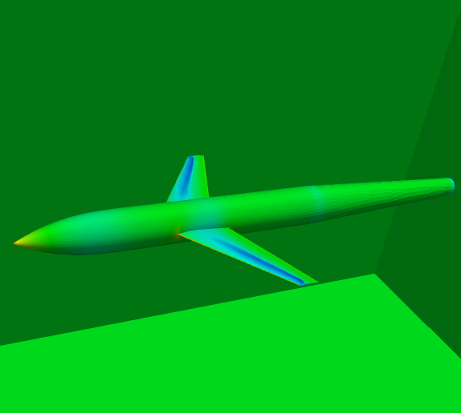
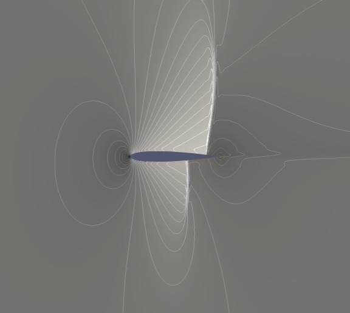

- Discrete adjoint approach for steady and unsteady flows
- Meshfree methods
- High Performance Computing

Education
- PhD in Aeronautics and Space Engineering, Sapienza Università di Roma, Roma, Italia (Nov 2019 - present)
- Msc in Applied Mechanics, Chalmers tekniska högskola, Göteborg, Sverige (Aug 2014 - Jan 2017)
- BE in Mechanical Engineering, BMS College of Engineering, Bengaluru, India (Sep 2010 - Jun 2014)

Research Experience
- Junior Research Fellow, Dept. of Mathematics, BITS-Pilani, Hyderbad Campus, Hyderabad, India (Aug 2017 - Aug 2019)
- Master Thesis Student, Div. of Fluid dynamics, Chalmers tekniska högskola, Göteborg, Sverige (Sep 2015 - Sep 2016)
Research Projects
- Sensitivity analysis for active flow control in buffet (Jun 2018 - Oct 2018)
- Collaborative work with Russell Quadros and Matteo Bernardini, Sapienza Università di Roma, Roma, Italia
- Development of a Meshfree solver (Jan 2018 - Present)
- Development of an accurate and robust unstructured grid-based adjoint approach for compressible turbulent flows (Aug 2017 - Aug 2019)
- Implementation and Evaluation of a New Numerical Scheme for Diffusive Fluxes using Finite Volume Method (Sep 2015 - Sep 2016)